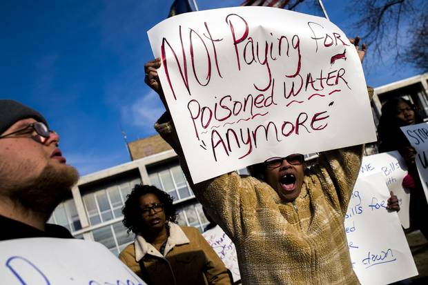
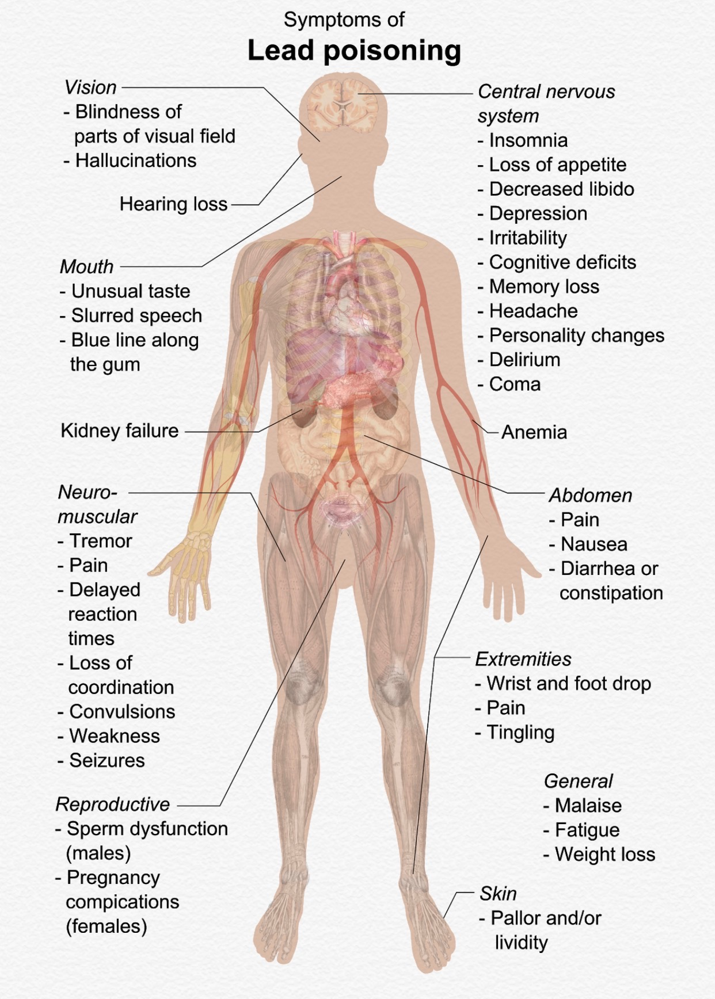
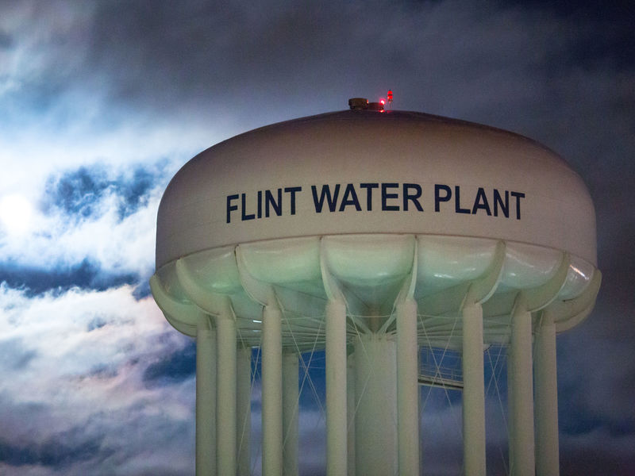

Worldwide, 780 million people do not have access to an improved water source
A town in michagan that had a huge water crisis in 2014 where all the water was contaminated
A town in michagan that had a huge water crisis in 2014 where all the water was contaminated

"These children are going to be injured for life. They're going to need remedial education, they're going to need educational enrichment programs," Landrigan says. "They're kids who are going to be prevented from functioning at their full level." -Jonathan LaPook Flint water makes people’s health be put in dangerIn children too much lead in the body can cause growth and development problemsLead poisoning affects the brain

By 2020 Flint Michigan’s water will be cleaned and 18,000 water lines will be replaced Also the state will have to pay $895,000 to the plaintiffs who brought the 2016 lawsuit
45,000 homes in Flint, Michigan are getting lead-free pipes.It would take 55 million dollars to change the pipe and fix flint water.18000 homes in Flint, Michigan are getting lead-free pipes
